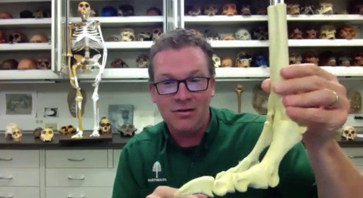
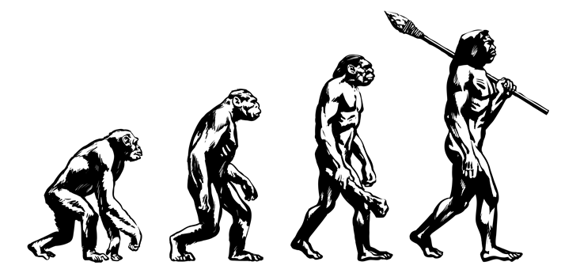
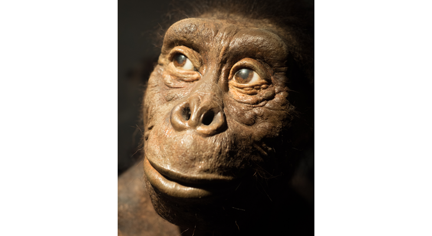

What Made Early Humans Smart
BY KEVIN BERGER
JUNE 30 2021 | 10 min read
Talking to Jeremy DeSilva about human evolution was so fun. As was reading his recent book, First Steps:
How Upright Walking Made Us Human. I learned something new and fascinating on every page. Do you picture
our hominin ancestors as hunters? I did. Not so much. “They were the hunted,” DeSilva writes. Let’s take
another look, as modern paleoanthropologists have, at the Taung child’s skull, one of paleontology’s
most famous fossils, the remains of a child from the species, Australopithecus africanus, discovered in
1924. A reanalysis of the Taung child, DeSilva tells us, showed talon marks in its eye sockets. “A bird
of prey, probably a crowned eagle, must have plucked the Taung child from the ground and carried it off
to be eaten.” See, I told you. Fun!
I might summarize DeSilva’s book and our interview as, “Everything I thought I knew about why humans
walk upright is wrong.” And DeSilva, a paleoanthropologist at Dartmouth College, is an insightful and
genial guide. I told him I was moved by his admission in First Steps that “for the first few minutes of
every visit with a new fossil, my calipers, camera, and scanner remain idle. I just sit, alone, with the
remains of my ancestors.” He smiled. “I love fossils,” he said. “When I first sit with a batch of
fossils, I think of them as individuals. I think, ‘Hey, a million years from now, if I’m lucky enough to
be a fossil, and there’s some paleontologist standing over me, I hope they take a moment to think about
me as an individual, and apply everything that they can possibly think of scientifically to squeeze
information out of my bones, to retell the story of what my life was like.’ That’s what we do as
paleoanthropologists.”
I began our interview by asking about the misperception that lingers to this day in his field and
specialty.

What are the most popular wrong scientific explanations for why humans walk upright?
As new evidence is discovered, we always can change our minds, right? But one wrong idea that’s still
with us—the basis of 2001: A Space Odyssey—is we were a violent species from the get-go and evolved
bipedalism to free our hands for weaponry. It was based on a misinterpretation of fossils discovered at
a site called Makapansgat in South Africa. The bones were supposedly butchered at the hands of
Australopithecus. But it turns out they were remains that had been consumed by hyenas. There’s another
popular idea that we evolved bipedalism to see over tall grass. But honestly, if you’re looking over
tall grass and see a predator, the worst thing you could do is run away on two legs. We’re too slow. It
would make sense that you run away on all fours, when you could gallop at twice the speed of a typical
human, or not even a typical human, an exceptional human.
So even Usain Bolt would be toast?
Yes, he would. Even the fastest human being that we can possibly imagine, probably the fastest human
who’s ever lived, is pathetically slow compared to your typical quadrupedal animal on an African
savanna. Usain Bolt tops out at about 28 miles an hour. That’s half the speed of a galloping zebra or
antelope or leopard or lion.
The image of a chimpanzee turning into a human that we see on T-shirts may not be how this all
unfolded.
To me, the greatest revelation of your research is we didn’t evolve from hominins that walked on
all fours. We evolved from ones who already walked upright.
This is a really hot topic in our field right now, and the field is divided on this, and I might be
completely wrong; we’ll see as we find more fossils. But my interpretation from the key time periods
when bipedalism was emerging, is that apes are not moving on their knuckles. They’re not adapted for
life on the ground. Instead, they’re up in the trees, moving with hand-assisted bipedalism, much like an
orangutan, gibbon, and siamang do now. We call them “lesser apes,” and they moved bipedally a lot.
What’s interesting is the knuckle-walkers, gorillas and chimpanzees, don’t move bipedally very
frequently.
We have fossils, mostly from Southern Europe, where apes appear to have a body posture that’s a little
more upright. What’s fun is the possibility that knuckle-walking might actually be the more recently
evolved locomotion. The image of a chimpanzee slowly turning into a human that we see on T-shirts and
coffee cups and bumper stickers may not be how this all unfolded. It could very well be that the common
ancestor was more upright, and that chimpanzees and gorillas evolved knuckle-walking independently.
That famous image is called “March of Progress.” Tell us about it.
“March of Progress” was an illustration done by a Russian artist, Rudolph Zallinger, in a 1965 Time-Life
book called Early Man. It’s this beautiful foldout that shows ancient apes down on all fours, and it has
them slowly rising up to modern humans. At the time, with the fossils we had, you could create a
narrative like that. But in the last half century we’ve made so many amazing discoveries that show the
human family tree is much more diverse. The pace of evolutionary change is quite different and it turns
out that upright walking is the earliest of these evolutionary changes. The earliest bipeds on the
ground were evolving from things that were upright to begin with in trees. Really all that happened was
an ecological change. These hominins were living in environments that had fewer and fewer trees. To
continue to get from point A to point B to get your fruit and other food resources, you already are
pre-adapted for an upright posture and moving on two legs. In that case, bipedalism wouldn’t be a new
locomotion, it’d be an old locomotion. It was just in a new setting on the ground, rather than in trees.

If bipedalism makes us slow, easy prey, why didn’t our ancestors go extinct? Why are we
here?
It’s a great question. What are the advantages in freeing the hands? We could carry objects—food and
babies. There are also thermo-regulatory adaptations. By being on two legs rather than four, you can
disperse heat better. Maybe those things became factors that allowed us to survive.
What’s the most beneficially adaptive trait for early hominins to walk upright?
I don’t know. I would disagree with any characterization that said there was one reason. If there was
one reason, we’d know it. It’d be obvious. In fact, bipedalism could have evolved independently in
different hominins in Africa. With the fossils we have, there’s the tantalizing possibility that it
didn’t just happen once. If we’ve learned anything about evolutionary trends, it’s that good ideas
evolve over and over again. For instance, the evolution of feathers and dinosaurs independently evolved
three times. You could get the independent evolution of bipedalism multiple times.
It’s a misnomer, isn’t it, to think only one hominin existed at a time?
It is. One of the things we’re learning from new fossil discoveries is there appears to be these
different species of early human, or hominin, coexisting on the landscape with different anatomies or
adaptations in their feet and legs. They would’ve walked very differently. A classic example is Lucy’s
species, Australopithecus afarensis, who lived about 3.5 million years ago, spanning from Ethiopia to
Tanzania.
A few years ago, a colleague of mine, Yohannes Haile-Selassie, discovered a partial foot skeleton in
Ethiopia, in sediments dated to the same age as Lucy. The expectation was it’s a foot from Lucy’s
species. But Lucy’s species didn’t have a grasping big toe, and this one does. It has other parts of the
bony anatomy that are consistent with pushing off the ground on two legs. So here we have something
walking on two legs, but walking on two legs very differently from the way Lucy and her kind did.
I tell my students all the time about how much fun it would be to jump in a time machine and go back to
Africa 3 or 4 million years ago. You’d see all these different kinds of hominins coexisting on a
landscape, eating slightly different things, moving in slightly different ways.
Usain Bolt tops out at about 28 miles an hour. That’s half the speed of a leopard or
lion.
You write that Lucy’s life would have been hard. How so?
Imagine you’re just about the slowest animal in your environment. You’re small. Lucy was about three and
a half feet tall, a full grown adult Australopithecus. She wouldn’t have gotten any bigger. Her growth
plates are fused, her wisdom teeth had erupted. And she’s sharing the landscape with a Homotherium, a
large saber tooth cat. They were ancestors of hyenas and were enormous. Some were ancestors of leopards
and lions. All of these things would have gladly eaten an Australopithecus. In fact, we have some
fossils with puncture marks in the back of the head. We know they got eaten.
Lucy would have woken up in a tree. That’s how you stay away from getting eaten at night. She would have
had to have hang tight as large cats were finishing up their meals from that night. And she would have
been hungry. To eat, her group would have to come down out of the trees. But if you’re a biped, you
can’t just put a baby on your back. The baby’s going to slide right off.
Baby chimpanzees and baboons cling to the fronts or wide backs of their mothers. Being upright means we
have to physically carry our kids. So now Lucy is physically carrying her kid. Now, in her arms, she’s
got this little fleshy meal for any carnivore, and she needs to go find food for herself in an
environment littered with predators. And yet she survived! What an amazing testament to the resilience
of our ancestors. Their survival is why we’re here.
What were key traits of Lucy’s survival?
If you’re living in a cooperative group, as I think early hominins were, you’re sharing food. You give
it to relatives, your own children, and to others in the group, who then reciprocate. That builds trust
and a cooperative culture that is essential for survival. To me, the only way that hominins could’ve
survived through these millions of years of living in an environment that is full of predators is if
they looked after each other and were hyper cooperative with one another.

How do paleoanthropologists know early hominins were cooperative?
One of the best pieces of evidence we have is a fossil of an individual who’s broken a leg bone, a
femur. This is long before hospitals, doctors, casts, anything like that. The beauty of the fossil is
you can see a healed fracture. Imagine 2 million years ago, you break your leg. There’s no way you
should survive. But a hominin did. The key word is healed. He survived that trauma. I don’t think he
could have done that alone.
Did bipedalism lead to cooperation?
I think so. We think about humans having evolved from something very chimpanzee-like, and chimpanzees
can be incredibly aggressive and violent. But we are equally related to bonobos, who are not aggressive
or violent. They’re female-dominated and don’t exhibit the same territorial behaviors that chimpanzees
do. Now, we didn’t evolve from either of those. They’re our cousins. We share a common ancestor with
them. But they provide an interesting mirror through which we think about ourselves and what that common
ancestor was like.
We all know how awful humans can be to each other. That’s well-established. But we overlook the fact
that humans are extraordinarily cooperative with one another, tolerant of each other, kind, helpful, and
empathetic. To me, what allowed an ape to survive for millions of years on a difficult landscape without
weaponry, was that we looked after each other, we took care of each other. We had each other’s backs. If
someone was injured, we helped them to a tree.
Maybe it’s better to say cooperation is a byproduct of being a vulnerable biped.
That’s exactly right. An ape that’s bipedal and isn’t nimble in trees is a recipe for extinction. But
here we are. Something allowed us to pass through those rigors of natural selection. And it’s
cooperation. One of the prime examples is childbirth. In non-human apes, childbirth is relatively easy.
The baby is usually facing forward, toward the mother’s belly, when it’s born. But in humans, because of
the changes to the pelvis associated with walking on two legs, a baby has to corkscrew through the birth
canal and it ends up being born facing backward most of the time, and that requires assistance. One of
the cultural universals in humans is to have assistance during birth, usually in the form of an
experienced midwife. If you’re trusting someone, another member of your group, during childbirth, then
you’re going to trust them at other times.
Whenever someone asks me about the Paleo diet, I’ll say, “Which human population are you
talking about?”
How did bipedalism lead to brain development?
This one’s more speculative. We’re not entirely sure. Darwin hypothesized that bipedalism and tool use
and canine reduction and brain size evolve in concert. You can see Darwin’s ideas in the “March of
Progress” illustration. As bipedalism is getting more refined, brains are getting bigger. But that’s not
consistent with the evidence. Instead, we find bipedalism goes back to the origins of the lineage. Brain
size doesn’t inflate until much later. About 2 million years ago, we start seeing a real increase in
brain size. The brains of Australopithecus get a little bit bigger than their predecessors, but nothing
like what we see in genus homo. That leap in growth is about getting enough energy to sustain this
energetically costly organ, the brain.
Energy is a zero-sum game, right? There’s only so much energy available and the body allocates it
to the most demanding organs?
That’s right. One of the hypotheses about brain growth is derived from what’s called the “expensive
tissue hypothesis.” Energy is allocated to the brain, but where are you getting that energy from? The
argument is the digestive system. Essentially the intestines reduce in volume, and by reducing that
expensive tissue, you’re able to allocate more energy to a larger brain. But if you do that, you’re not
able to digest plants as well anymore, unless you cook them. So there seems to be this relationship
between the diversification of our diet, eating more meat and marrow, scavenging, and hunting. And fire
plays a role too, because now you can cook. All those things are fueling brain growth.
Where does bipedalism enter the picture?
Coinciding with this, we see an increase in leg length. We start to see a more human-like arch to the
foot. It’s almost as if these final tweaks made bipedalism even more efficient, and allowed us to travel
greater distances, expand our home range. By expanding our home range, we’re now able to extract more
resources from our environment. We can eat animals and the plants from a larger radius.
Did bipedalism contribute to humans being omnivores?
I think it did. We can tell from isotope signatures in the teeth of our earliest ancestors that they
were eating stuff in a forested environment. They were eating fruits and leaves, typically what an ape
would eat. But when you get to Australopithecus, Lucy’s time, you get a huge shift in the profile of the
isotopes. They show that Lucy started eating lots of different things in different environments. That’s
consistent with a biped spending more time on the ground than in trees to get their food.
Remember, Lucy’s life was hard. She can’t afford to be a picky eater. She’s not going to search and
search for that one thing she’s craving. There are predators all over the place. She’ll get eaten and
her kid will get eaten. She needed to eat anything. She needed to eat grasses and leaves and fruit.
Maybe there’s a carcass with a little bit of meat left on it, and she could munch on that. She could dig
for underground tubers and munch on those. Insects, termites, birds, eggs, lizards, snails—you name it,
she was eating it. And humans do that today.
I guess that shoots down the trendy diets that say we should eat one particular type of food because our
early ancestors did.
[Laughs]. Whenever someone asks me about the Paleo diet, I’ll say, “Which population are you talking
about? Are you talking about the humans who were living in Northern Asia, the humans who were living in
Europe, the humans who were living in Africa on a grassland environment, the humans who were living in a
forested region, the humans who were living on coasts?” During the Paleolithic, you’re going to have
very different diets depending on the human population we’re talking about. It’s because humans are
unbelievably, dietarily flexible. We can eat anything. In those varied habitats, we did eat everything.
There’s no one-size-fits-all diet for humans.
Here we are in 2021, living in an entirely different world, of course, than our hominin ancestors
did. How is bipedalism not adapted to contemporary life?
I threw out my back a couple of weeks ago and couldn’t walk. Our lower back is a mess. Most mammals move
on all fours and their spine is horizontal, it operates like a suspension bridge. By being bipedal,
we’ve turned that spine vertical, a bad idea. And to make sure that the torso is oriented over the hips,
and that all of our joints are aligned and balanced, there’s a curve that’s introduced into the spine. A
colleague of mine, Bruce Latimer at Case Western Reserve University, refers to this as a series of cups
and saucers. That’s how unstable the spine is. Slip discs are very common. We’re one of the few mammals
that develop scoliosis.
Then there’s the real nightmare: the foot. If you were going to challenge an engineer to design a
structure that has to be compliant enough to absorb forces from the ground, but then rigid enough to
push off the ground, and maybe even elastic enough that it can absorb some energy to push off the
ground, the last thing they would do is make it out of 26 parts. And your foot has 26 individual bones.
Between your two feet, you’ve got 52 bones, which is a quarter of your skeleton. A quarter of the human
skeleton is made up of foot bones. Why? It’s because we’re modified apes, and apes need all those foot
bones to grab onto trees; they use their feet in much the same way we use our hands. By evolving
bipedalism, natural selection can only work with pre-existing forms. It tinkered with this ape foot. I
think of it as using duct tape and paper clips to patch together and stiffen up this foot. And it’s good
enough, right? We’re here and we can move from point A to point B. But evolution doesn’t care about
comfort, and so we’ve got a lot of problems.
Is there a larger message about evolutionary biology in our anatomical problems?
Yes, and it comes back to what we were talking about before. Humans buffer themselves with culture. Is
natural selection still operating on humans? Absolutely. It has for the last 6 million years. Our foot
anatomy may be suboptimal and lead to problems. But we solve our problems culturally and socially.
Thankfully, we’re not twiddling our thumbs and waiting for natural selection to solve them for us.
BY KEVIN BERGER
JUNE 30, 2021